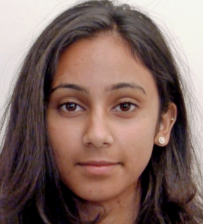
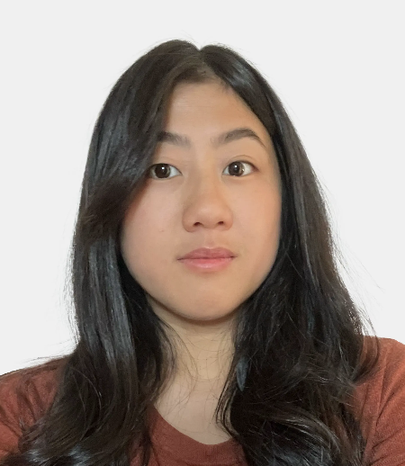

Our People
Our engineers and scientists drive advancements through deep domain knowledge and technical expertise
| Name | Area(s) | |
|---|---|---|
| Dr. Alex Triay Bagur | Senior AI Engineer | |
| Dr. Amanda Kiemes | NLP/Data Analyst | |
| Dr. Anthony Shek | Lead NLP Engineer, NLP & Analytics Lead | |
| Dr. Dan Stein | Clinical Data Scientist, Medical Doctor | |

|
Dr. Emily Jin | Senior Data Scientist, Product Owner, Medical Doctor |
| Haleema Drake | Lead Multi-Modal Data Engineer | |
| Dr. Isobel Weinberg | Lead Data Scientist, Population Health Science Lead, Medical Doctor | |
| Prof. James Teo | Chief Medical Officer, Professor of Neurology | |
|  | Dr. Jasjot Saund | Clinical Data Scientist, Medical Doctor |
| Jawad Chaudhry | AI Centre Programme Manager | |
| Dr. Joe Zhang | Head of Data Science, AIC/SDE Technical Lead, Medical Doctor | |
| Dr. Jorge Cardoso | Reader (Medical AI) @ KCL | |
| Dr. Lawrence Adams | Lead Analytics Engineer, Real-World Data Lead, Medical Doctor | |
|  | Lisa Law | AI Centre Project Manager |
| Mac Fernandes | Data Engineer | |
| Dr. Marc Modat | Reader (Computational Imaging) @ KCL | |
| Nathan Pinnock | NLP/Data Analyst | |
| Dr. Paul Wright | Imaging Data Lead | |
| Dr. Rafael Garcia-Dias | Senior AI Engineer | |
| Prof. Seb Ourselin | Director @ AI Centre / LIHE, Head of School @ KCL | |
| Sigal Hachlili | Director of Data, AI, Digital @ GSTT | |

|
Sophie Ratkai | Genomics AI Lead, Clinical Scientist |
| Steph Jones | Senior Data Engineer, Clinical Pharmacist | |
| Dr. Teddy Hla | Clinical Data Scientist, Medical Doctor | |
| Dr. Virginia Fernandez | Senior AI Engineer | |
| Vitaliy Oliynyk | Senior Developer |
No matching items